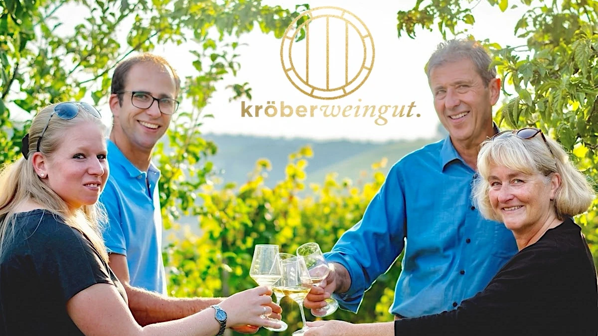
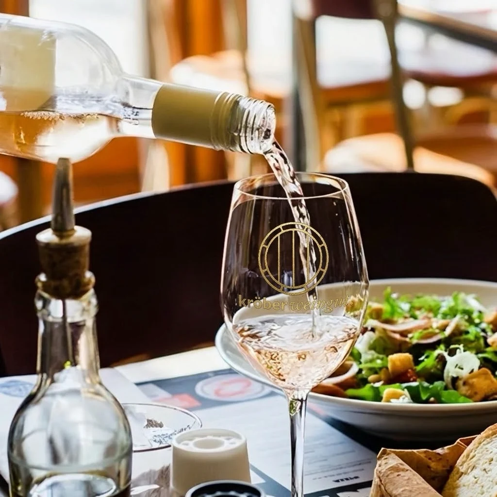

Winningen an der Mosel · Brennerei · Hofverkauf


Fachlich kommentierte Probe mit sechs Weinen und Brot. Auf Wunsch stellt das Weingut die Probe individuell zusammen.
200 € bis 10 Personen
jede weitere Person 20 €
Geführte Wanderung durch die Weinberge, die auf der Panoramaterrasse mit einer Weinprobe endet. Dazu gibt es einen kleinen Snack mit Käse und Salami.
40 € pro Person
Bei schlechtem Wetter findet die Probe im Weingut statt.
Hahnenstraße 14, 56333 Winningen an der Mosel, bei Koblenz. Die Anfahrt steht auf der Kontaktseite des Weinguts.
Noch nicht bekannt: Sprachen der Führungen und Öffnungszeiten außerhalb der Probetermine. Bitte beim Weingut erfragen.